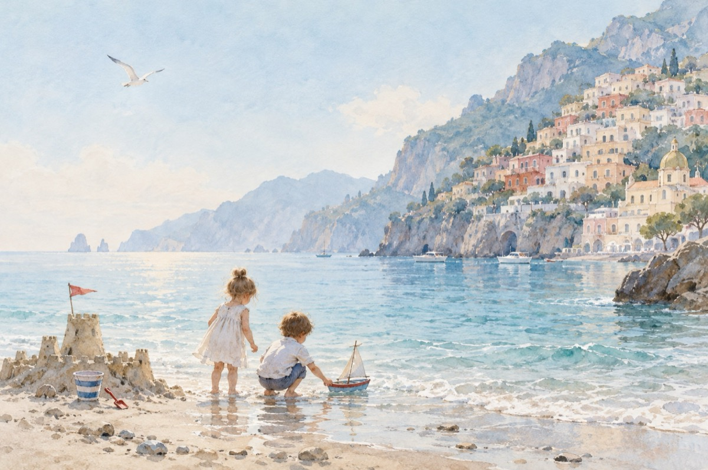

Când vin copiii-n Positano
La Positano.
Când vin copiii-n Positano
Ei totul văd în felul lor
Clădirile precum un joc de domino
În țara sfântă și frumoasă-a jucăriilor.
Castelele pierdute printre stânci
De unde zâne Cosânzene des oftează
Sunt ferecate de-al zmeilor porunci
Iar Feți-Frumoșii lumii le salvează.
Pirați au sosit în port să cotropească
Și dau năvală peste tot
Iar Rocco cel viteaz orașul îș salvează
Și îi alungă pe pirați din port.
Pe străzi, piscine și-n frumoasa plajă
Copiii fac castele de nisip și fortărețe
Și-n apa mării navele-și lansează
Vrând lumea la pacea din jocul lor să-nvețe.
Când vin copiii-n Positana
Alt soare la răsărit răsare
Și veselia umblă peste tot cu caravana
Iar viața aici devine-o sărbătoare!
Vasile Groza